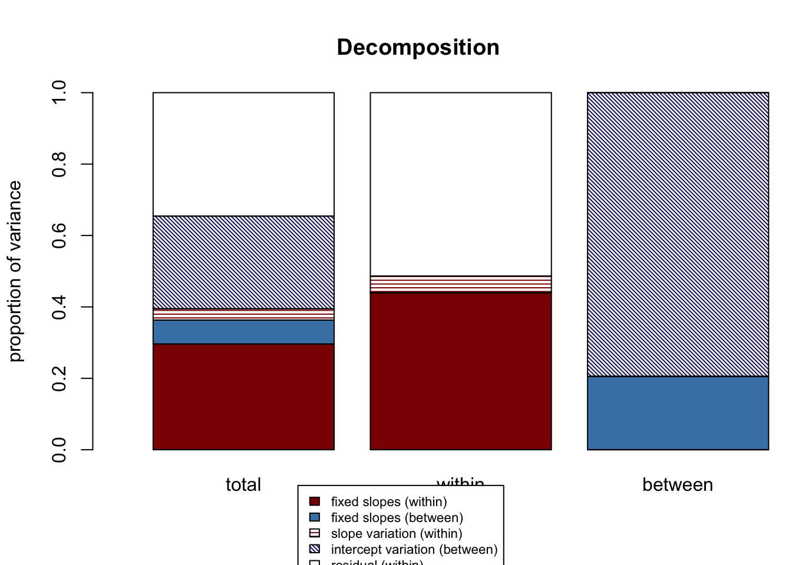
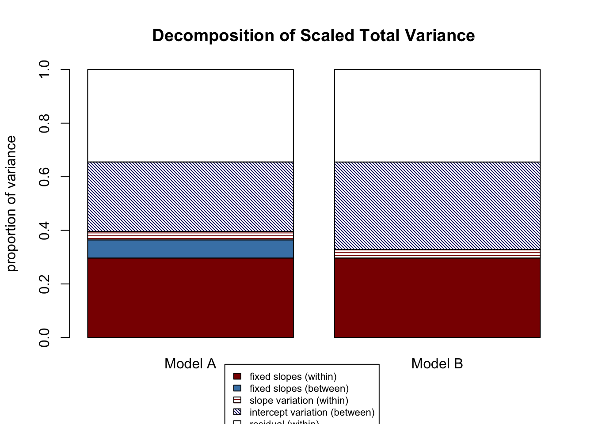
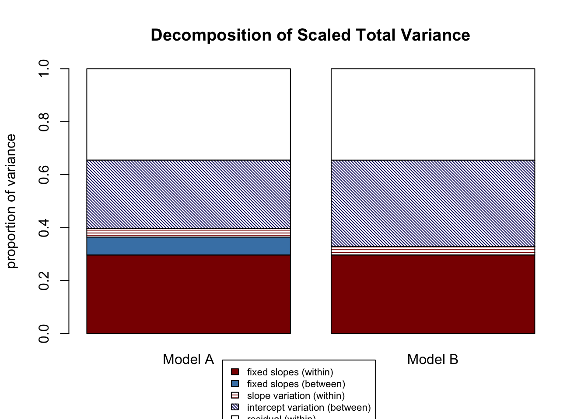
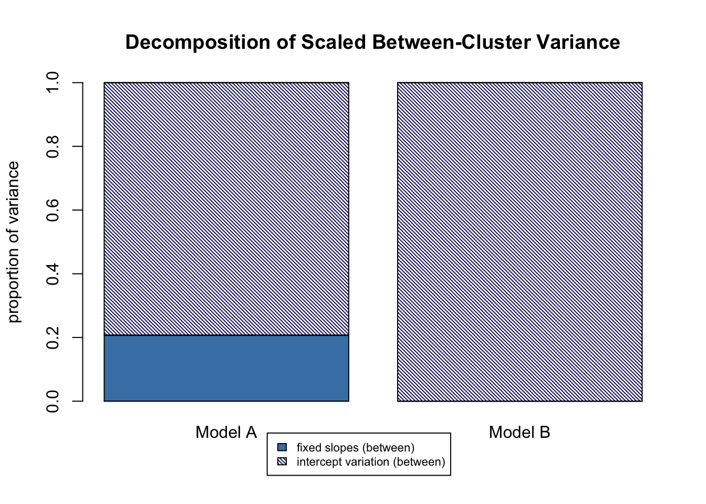
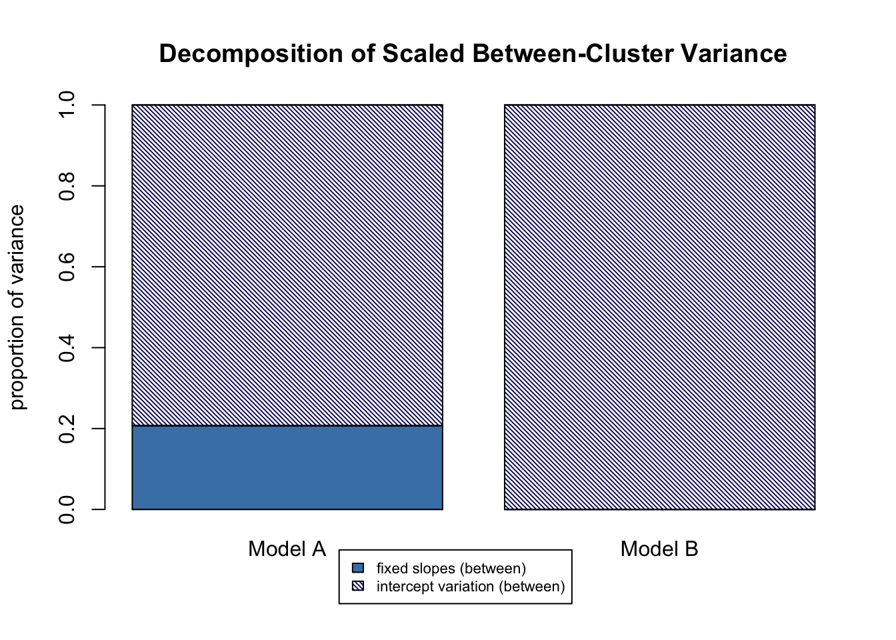

Chapter 11 Effect Sizes in Multilevel Models
11.1 Learning Objectives
In this chapter we will discuss effect sizes in multilevel models, with a particular focus on R-squared. Note that this is an adaptation of a published work, Shaw, Rights, Sterba, and Flake (2022).
The learning objectives for this chapter are:
- Define effect sizes;
- Understand the components of Rights & Sterba’s (2019) framework for R-squared in MLMs;
- Implement and interpret R-squared results for single models, via automatic and manual entry;
- Select models to compare for a given research question and interpret comparison output.
All materials for this chapter are available for download here.
11.2 Data Demonstration
11.2.1 Load Data and Dependencies
For this data demo, we will use the following packages:
library(r2mlm) # for R-squared values
library(lme4) # for multilevel models
library(lmerTest) # for p-values
library(performance) # for ICCWe will be using the teachsat dataset included in the r2mlm package. This is simulated data about teacher job satisfaction. Teachers are clustered within schools. The level-1 variables are school-centered salary and control over curriculum, and the level-2 variables are school average salary, school average control over curriculum, and student-teacher ratio.
data(teachsat)11.2.2 Defining Effect Sizes
Effect sizes are important for contextualizing the magnitude of results from your model. Effect sizes go beyond statistical significance to ask “what is the practical significance of this result? Do we care about the effect of this predictor?” Effect sizes can be standardized or unstandardized (expressed in the units of the dependent variable). Regression coefficients are one example of an unstandardized effect size that we’ve already seen in earlier chapters: for a one-unit increase in SES, math scores increase/decrease by some amount. If that coefficient is very small, like 0.01 points, even if it’s statistically significant we’re probably not that interested in a 0.01% increase in test scores. Unstandardized effect sizes like this are useful when the units are interpretable, like with math test scores. Standardized effect sizes measure magnitude without units, and as such can be particularly useful when original metrics are not particularly interpretable (e.g., log reaction times, scores on Likert scales that don’t have inherent meaning).
11.2.3 R-squared in Multilevel Models
One example of a standardized effect size is R-squared, or proportion of variance in the outcome explained by a model. In single-level regression, it is calculated as the outcome variance explained by the model divided by the total outcome variance:
\[R^2 = \frac{explained\ variance}{total\ variance}\] This yields an intuitive variance explained measure ranging from 0 to 1, with 0 indicating 0% explained and 1 indicating 100% explained.
In multilevel regression, a single R-squared term cannot accurately capture variance explained because there are multiple sources of variance and kinds of predictors explaining that variance. As we have discussed, we partition total variance into within and between variance, so we have three possible denominators: total outcome variance, outcome variance within a cluster, and outcome variance between clusters. Further, we have multiple sources of explained variance, so we have four possible unique numerators: fixed effects at level-1, fixed effects at level-2, a random intercept effect, and random slope effects. With all these sources of variance and options for explaining variance, a single R-squared value cannot capture variance explained for MLMs. Rights & Sterba (2019) first detailed a comprehensive framework that accounts for all these sources of variance and variance explained and can be referenced for a more detailed explanation of the framework. Here, we provide an overview of the 12 R-squared terms in the framework.
11.2.3.1 Within Variance Explained
At the within level of the model, there are three possible sources of variance: the level-1 predictors via the fixed effects (shorthand: “f1”), the level-1 predictors via the random effects (shorthand: “v”), and the level-1 residuals (shorthand: resid). Our denominator for within R-squareds contains these three terms, because the sum of all three represents the total within variance:
\[R^2_{within} = \frac{explained\ variance}{var_{f1} + var_{v} + var_{resid}}\] You can then calculate two distinct effect sizes from this. The first is within variance explained by level 1 predictors via fixed effects:
\[R^{2(f1)}_{within} = \frac{var_{f1}}{var_{f1} + var_{v} + var_{resid}}\] The second is within variance explained by random slopes:
\[R^{2(v)}_{within} = \frac{var_{v}}{var_{f1} + var_{v} + var_{resid}}\] You can also calculate a higher-level term for variance explained by BOTH level-1 fixed effects and random slopes:
\[R^{2(f1v)}_{within} = R^{2(f1)}_{within} + R^{2(v)}_{within} = \frac{var_{f1} + var_{v}}{var_{f1} + var_{v} + var_{resid}}\] We’re not calculating an \(R^{2(resid)}_{within}\) with \(var_{resid}\) in the numerator because the residuals are all variance left after accounting for all predictors, so it doesn’t make sense to have “variance explained by residual variance.”
Regarding notation: a given R-squared is described by two elements: a subscript and a superscript. The subscripts indicate at what level variance is being explained: “within” for within-cluster, “between” for between-cluster, and “total” for total. The superscripts indicate what potential sources of variance are contributing to variance explained: “f1” for level 1 predictors via fixed effects, “f2” for level-2 predictors via fixed effects, and so on.
11.2.3.2 Between Variance Explained
Between variance is composed of the contribution of level 2 predictors via fixed effects (shorthand: “f2”) and cluster-specific means via intercept variation (shorthand: “m”):
\[R^2_{between} = \frac{explained\ variance}{var_{f2} + var_{m}}\] We have two R-squared terms here. The first is for between-variance explained by level-2 fixed effects:
\[R^{2(f2)}_{between} = \frac{var_{f2}}{var_{f2} + var_{m}}\]
The second is for between-variance explained by random intercept variation:
\[R^{2(m)}_{between} = \frac{var_{m}}{var_{f2} + var_{m}}\]
We are not calculating a higher-level term \[R^{2(f2m)}_{between} = \frac{var_{f2} + var_{m}}{var_{f2} + var_{m}}\] because all variance between clusters is captured by fixed-effects at level-2 and random intercept variation, so this term would always be equal to 1.
11.2.3.3 Total Variance Explained
Total variance then is the combination of within and between variance explained, and thus total R-squared measures take the following form:
\[R^2_{total} = \frac{explained\ variance}{var_{f1} + var_{f2} + var_{v} + var_{m} + var_{resid}}\] There are four possible unique R-squared terms here. The first is total variance explained by fixed effects at level-1:
\[R^{2(f1)}_{total} = \frac{var_{f1}}{var_{f1} + var_{f2} + var_{v} + var_{m} + var_{resid}}\] The second is total variance explained by fixed effects at level-2:
\[R^{2(f2)}_{total} = \frac{var_{f2}}{var_{f1} + var_{f2} + var_{v} + var_{m} + var_{resid}}\] The third is total variance explained by random slope variation:
\[R^{2(v)}_{total} = \frac{var_{v}}{var_{f1} + var_{f2} + var_{v} + var_{m} + var_{resid}}\] And the fourth is total variance explained by random intercept variation:
\[R^{2(m)}_{total} = \frac{var_{m}}{var_{f1} + var_{f2} + var_{v} + var_{m} + var_{resid}}\] There are also three higher-level terms. The first is total variance explained by fixed effects at both level-1 and level-2:
\[R^{2(f)}_{total} = R^{2(f1)}_{total} + R^{2(f2)}_{total} = \frac{var_{f1} + var_{f2}}{var_{f1} + var_{f2} + var_{v} + var_{m} + var_{resid}}\] The second is total variance explained by fixed effects at both level-1 and level-2 and random slope variation:
\[R^{2(fv)}_{total} = R^{2(f1)}_{total} + R^{2(f2)}_{total} + R^{2(v)}_{total} = \frac{var_{f1} + var_{f2} + var_v}{var_{f1} + var_{f2} + var_{v} + var_{m} + var_{resid}}\] The third and final higher-level term is total variance explained by fixed effects at level-1 and level-2, random slope variation, and random intercept variation:
\(R^{2(fvm)}_{total} = R^{2(f1)}_{total} + R^{2(f2)}_{total} + R^{2(v)}_{total} + R^{2(m)}_{total}= \frac{var_{f1} + var_{f2} + var_v + var_m}{var_{f1} + var_{f2} + var_{v} + var_{m} + var_{resid}}\)
You could also calculate higher-level terms \(R^{2(f1v)}_{total}\), \(R^{2(f2v)}_{total}\), \(R^{2(f1m)}_{total}\), \(R^{2(f2m)}_{total}\), \(R^{2(f1vm)}_{total}\), and \(R^{2(f2vm)}_{total}\) if you wanted by summing the appropriate individual terms, but those are not automatically calculated for you in the r2mlm function we’ll see in a moment because they’re not as widely substantively interesting as the other combinations.
In all, we have 12 R-squared measures: 3 within measures, 2 between measures, and 7 total measures. Here is a table for your quick reference:
| Measure | Definition/Interpretation |
|---|---|
| \[R^{2(f1)}_{total} = \frac{var_{f1}}{var_{f1} + var_{f2} + var_{v} + var_{m} + var_{resid}}\] | Proportion of total outcome variance explained by level-1 predictors via fixed slopes |
| \[R^{2(f2)}_{total} = \frac{var_{f2}}{var_{f1} + var_{f2} + var_{v} + var_{m} + var_{resid}}\] | Proportion of total outcome variance explained by level-2 predictors via fixed slopes |
| \[R^{2(v)}_{total} = \frac{var_{v}}{var_{f1} + var_{f2} + var_{v} + var_{m} + var_{resid}}\] | Proportion of total outcome variance explained by level-1 predictors via random slope variation/covariation |
| \[R^{2(m)}_{total} = \frac{var_{m}}{var_{f1} + var_{f2} + var_{v} + var_{m} + var_{resid}}\] | Proportion of total outcome variance explained by cluster-specific outcome means via random intercept variation |
| \[R^{2(f)}_{total} = \frac{var_{f1} + var_{f2}}{var_{f1} + var_{f2} + var_{v} + var_{m} + var_{resid}}\] | Proportion of total outcome variance explained by all predictors via fixed slopes |
| \[R^{2(fv)}_{total} = \frac{var_{f1} + var_{f2} + var_v}{var_{f1} + var_{f2} + var_{v} + var_{m} + var_{resid}}\] | Proportion of total outcome variance explained by predictors via fixed slopes and random slope variation/covariation |
| \[R^{2(fvm)}_{total} = \frac{var_{f1} + var_{f2} + var_v + var_m}{var_{f1} + var_{f2} + var_{v} + var_{m} + var_{resid}}\] | Proportion of total outcome variance explained by predictors via fixed slopes and random slope variation/covariation and by cluster-specific outcome means via random intercept variation |
| \[R^{2(f1)}_{within} = \frac{var_{f1}}{var_{f1} + var_{v} + var_{resid}}\] | Proportion of within-cluster outcome variance explained by level-1 predictors via fixed slopes |
| \[R^{2(v)}_{within} = \frac{var_{v}}{var_{f1} + var_{v} + var_{resid}}\] | Proportion of within-cluster outcome variance explained by level-1 predictors via random slope variation/covariation |
| \[R^{2(f1v)}_{within} = \frac{var_{f1} + var_{v}}{var_{f1} + var_{v} + var_{resid}}\] | Proportion of within-cluster outcome variance explained by level-1 predictors via fixed slopes and random slope variation/covariation |
| \[R^{2(f2)}_{between} = \frac{var_{f2}}{var_{f2} + var_{m}}\] | Proportion of between-cluster outcome variance explained by level-2 predictors via fixed slopes |
| \[R^{2(m)}_{between} = \frac{var_{m}}{var_{f2} + var_{m}}\] | Proportion of between-cluster outcome variance explained by cluster-specific outcome means via random intercept variation |
Let’s look at an example with our teacher job satisfaction data to develop our intuition for using this framework and interpreting its results.
11.2.4 Single Model, Automatic Entry
Let’s begin with a null model with teacher job satisfaction (satisfaction) as the outcome with school (schoolID) as the clustering variable and REML as the estimator.
| Level | Equation |
|---|---|
| Level 1 | \(satisfaction_{ij} = \beta_{0j} + R_{ij}\) |
| Level 2 | \(\beta_{0j} = \gamma_{00} + U_{0j}\) |
| Combined | \(satisfaction_{ij} = \gamma_{00} + U_{0j} + R_{ij}\) |
We’re estimating 3 parameters here:
- \(\gamma_{00}\): the fixed effect for the intercept, mean teacher job satisfaction across all schools;
- \(\tau_0^2\): a random effect for the intercept capturing the variance of school’s average job satisfaction levels around the intercept;
- \(\sigma^2\): a random effect capturing the variance of teachers around their school average job satisfaction.
null_model <- lmer(satisfaction ~ 1 + (1|schoolID), data = teachsat, REML = TRUE)
summary(null_model)## Linear mixed model fit by REML. t-tests use Satterthwaite's method ['lmerModLmerTest']
## Formula: satisfaction ~ 1 + (1 | schoolID)
## Data: teachsat
##
## REML criterion at convergence: 30098.4
##
## Scaled residuals:
## Min 1Q Median 3Q Max
## -3.8269 -0.6385 0.0012 0.6435 3.2874
##
## Random effects:
## Groups Name Variance Std.Dev.
## schoolID (Intercept) 0.699 0.836
## Residual 1.516 1.231
## Number of obs: 9000, groups: schoolID, 300
##
## Fixed effects:
## Estimate Std. Error df t value Pr(>|t|)
## (Intercept) 5.99677 0.04998 299.00000 120 <0.0000000000000002 ***
## ---
## Signif. codes: 0 '***' 0.001 '**' 0.01 '*' 0.05 '.' 0.1 ' ' 1The fixed effect for our intercept is 6.00, indicating the average teacher job satisfaction across all schools. The random effect describing how schools vary around that average is 0.70, and the random effect describing how teachers vary around their school averages is 1.52.
Let’s use the automatic r2mlm() function for the first time to calculate how much variance in teacher job satisfaction is explained by the null model.
r2mlm(null_model)
## $Decompositions
## total within between
## fixed, within 0 0 NA
## fixed, between 0 NA 0
## slope variation 0 0 NA
## mean variation 0.315546785367943 NA 1
## sigma2 0.684453214632058 1 NA
##
## $R2s
## total within between
## f1 0 0 NA
## f2 0 NA 0
## v 0 0 NA
## m 0.315546785367943 NA 1
## f 0 NA NA
## fv 0 0 NA
## fvm 0.315546785367943 NA NAThere are three parts to our output: Decompositions, R2s, and a graph. The decompositions output gives us all of our unique R-squared estimates. The R2s output gives us the unique output plus the higher-level combination output: (1) variance explained by all fixed effects at both level-1 and level-2 (represented by “f”), (2) variance explained by all fixed effects and random slope variances (“fv”), and (3) variance explained by all fixed effects, random slope variances, and the random intercept variance (“fvm”). The graph visualizes the unique R-squared estimates from the Decompositions output and includes a legend.
Looking at our output, we can see that the variance explained by our random intercept, “m”, is 0.316, or 31.6%. What is this number? It’s the ICC, the variance attributed to school membership! We can use our familiar ICC function to see that it matches our r2mlm output:
performance::icc(null_model)## # Intraclass Correlation Coefficient
##
## Adjusted ICC: 0.316
## Conditional ICC: 0.316Let’s now use r2mlm to fit a larger model predicting job satisfaction from salary (with a random slope), control over curriculum, and student-teacher ratio:
| Level | Equation |
|---|---|
| Level 1 | \(Y_{satisfaction} = \beta_{0j} + \beta_{1j}*salary\_c_{ij} + \beta_{2j}*control\_c_{ij} + R_{ij}\) |
| Level 2 | \(\beta_{0j} = \gamma_{00} + \gamma_{01}*s\_t\_ratio_{j} + U_{0j}\) |
| \(\beta_{1j} = \gamma_{10}\) | |
| \(\beta_{2j} = \gamma_{20} + U_{2j}\) | |
| Combined | \(Y_{satisfaction} = \gamma_{00} + \gamma_{01}*s\_t\_ratio_{j} + \gamma_{10}*salary\_c_{ij} + \gamma_{20}*control\_c_{ij} + U_{0j} + U_{2j}*control\_c_{ij} + R_{ij}\) |
We will be estimating 8 parameters:
- \(\gamma_{00}\): the fixed effect for the intercept, mean job satisfaction levels controlling for salary, curriculum-control, and student-teacher ratio;
- \(\gamma_{01}\): the fixed effect for student-teacher ratio, effect of school-wide class size on job satisfaction controlling for salary and curriculum;
- \(\gamma_{10}\): the fixed effect for salary_c, effect of salary on job satisfaction within a school, controlling for curriculum and student-teacher ratio;
- \(\gamma_{20}\): the fixed effect for control_c, effect of control over curriculum on job satisfaction within a school, controlling for salary and student-teacher ratio;
- \(\tau_0^2\): a random effect for the intercept capturing the variance of schools’ average job satisfaction around the intercept controlling for salary, curriculum, and student-teacher ratio;
- \(\tau_2^2\): a random effect for the slope of curriculum control capturing the variance of schools’ curriculum slopes around the grand mean slope controlling for salary and student-teacher ratio;
- \(\sigma^2\): a random effect capturing the variance of teachers around their school average job satisfaction, controlling for salary, curriculum, and student-teacher ratio;
- \(\tau_{02}\): the covariance between the random intercept and random slope. Do schools with higher job satisfaction intercepts have higher/lower effects of curriculum?
full_model <- lmer(satisfaction ~ 1 + control_c + salary_c + s_t_ratio + (1 + control_c | schoolID),
data = teachsat,
REML = TRUE)
summary(full_model)## Linear mixed model fit by REML. t-tests use Satterthwaite's method ['lmerModLmerTest']
## Formula: satisfaction ~ 1 + control_c + salary_c + s_t_ratio + (1 + control_c |
## schoolID)
## Data: teachsat
##
## REML criterion at convergence: 24507.4
##
## Scaled residuals:
## Min 1Q Median 3Q Max
## -4.6115 -0.6275 0.0108 0.6414 3.7958
##
## Random effects:
## Groups Name Variance Std.Dev. Corr
## schoolID (Intercept) 0.57478 0.7581
## control_c 0.02826 0.1681 0.07
## Residual 0.76561 0.8750
## Number of obs: 9000, groups: schoolID, 300
##
## Fixed effects:
## Estimate Std. Error df t value Pr(>|t|)
## (Intercept) 7.186462 0.144236 298.156241 49.824 < 0.0000000000000002 ***
## control_c 0.311279 0.011361 297.410490 27.398 < 0.0000000000000002 ***
## salary_c 0.074132 0.001078 8534.742576 68.752 < 0.0000000000000002 ***
## s_t_ratio -0.037178 0.004285 297.992425 -8.676 0.000000000000000271 ***
## ---
## Signif. codes: 0 '***' 0.001 '**' 0.01 '*' 0.05 '.' 0.1 ' ' 1
##
## Correlation of Fixed Effects:
## (Intr) cntrl_ slry_c
## control_c 0.017
## salary_c 0.000 -0.004
## s_t_ratio -0.951 0.000 0.000Matrix::bdiag(VarCorr(full_model))## 2 x 2 sparse Matrix of class "dgCMatrix"
## (Intercept) control_c
## (Intercept) 0.574775228 0.008596084
## control_c 0.008596084 0.028261325The average teaching satisfaction across all schools at average levels of curriculum control and salary and a student-teacher ratio of 0 is 7.19. (Note: this is an example of an uninterpretable zero point because there is no meaning behind a student-teacher ratio of zero. However, for demonstration purposes we’re going to keep going and ignore that issue.) A one-unit increase in control over the curriculum within a school is associated with a 0.31-unit increase in teacher job satisfaction (on the 1-10 scale), controlling for salary and student-teacher ratio. A one-unit increase in salary within school is associated with a 0.07-unit increase in job satisfaction, controlling for curriculum control and student-teacher ratio. A one-unit increase in student-teacher ratio (i.e., one more student per class; all classes in one school have the same number of students) is associated with a 0.03-unit decrease in job satisfaction, at school average salary and control over curriculum.
Looking at random effects, the term describing how the intercepts vary across schools is 0.57. The term describing how schools’ curriculum-control slopes vary around the grand mean is 0.03. The term describing how teachers’ intercepts vary around the grand mean intercept is 0.77. The covariance between the random intercept and random slope of curriculum is 0.01, so there is a negligible relationship between intercept and slope values.
Recall that interpreting these coefficients in this way — a one-unit change is associated with an X-unit change in the outcome — is also an embodiment of effect sizes. Now let’s also calculate and interpret R-squared for this model.
r2mlm(full_model)
## $Decompositions
## total within between
## fixed, within 0.296431806719555 0.440263091958242 NA
## fixed, between 0.0676695868874132 NA 0.207134501406624
## slope variation 0.0318477856338068 0.0473006076180897 NA
## mean variation 0.259024355588986 NA 0.792865498593376
## sigma2 0.34502646517024 0.512436300423669 NA
##
## $R2s
## total within between
## f1 0.296431806719555 0.440263091958242 NA
## f2 0.0676695868874132 NA 0.207134501406624
## v 0.0318477856338068 0.0473006076180897 NA
## m 0.259024355588986 NA 0.792865498593376
## f 0.364101393606968 NA NA
## fv 0.395949179240775 0.487563699576332 NA
## fvm 0.65497353482976 NA NAWith our larger model, our R-squared output is filling out. Let’s look at our Decompositions output, the top of the output printed to the console. The first column represents total variance explained. Reading from top to bottom, we can see that for this model:
- Fixed effects at level-1 explain 29.6% of total variance in teacher job satisfaction
- Fixed effects at level-2 explain 6.8% of total variance in teacher job satisfaction
- Random slope variation explains 3.2% of total variance in teacher job satisfaction
- Random intercept variation explains 25.9% of total variance in teacher job satisfaction
- Remaining residual variance is 34.5% of total variance in teacher job satisfaction
The second column represents within variance explained. Reading from top to bottom, we can see that for this model:
- Fixed effects at level-1 explain 44% of within variance in teacher job satisfaction
- Random slope variation explains 4.7% of within variance in teacher job satisfaction
- Remaining residual variance is 51.2 of within variance in teacher job satisfaction
The third column represents between variance explained. Reading from top to bottom, we can see that for this model:
- Fixed effects at level-2 explain 20.7% of between variance in teacher job satisfaction
- Random intercept variation explains 79.3% of between variance in teacher job satisfaction
The second output printed to console, R2s, repeats this information using the f1, f2, f, v, m notation discussed above and includes the higher-level R-squared combinations. In the first column:
- All fixed effects at level-1 and level-2 (“f”) explain 36.4% of total variance in teacher job satisfaction
- All fixed effects plus random slope variation (“fv”) accounts for 40.0% of total variance in teacher job satisfaction
- All fixed effects and random slope variation plus random intercept variation (“fvm”) account for 65.5% of total variance in teacher job satisfaction
In the second column:
- Fixed effects at level-2 and random slope variation (“f1v”) account for 48.8% of within variance in teacher job satisfaction
A graph is printed to visualize this information and facilitate understanding and interpreting it.
11.2.5 Single Model, Manual Entry
It is convenient but not always possible to use automatic entry where you feed r2mlm your model name and it extracts the necessary information and calculates the R-squareds. For example, perhaps you estimated your model in a different software like MPlus or SPSS and don’t have a model object to give the function. Or, you might have a complex model that doesn’t work with the automatic entry function (for example, containing higher-order terms created with the I() function). In cases where using the automatic function isn’t possible, there is r2mlm_manual(). It takes the following arguments:
| Parameter | Definition | For Our Example |
|---|---|---|
data |
your dataset | teachsat |
within_covs |
list of numbers or variable names corresponding to the column numbers/names in your dataset for level-1 predictors | our level-1 predictors are control_c and salary_c, which are in the fourth and fifth columns of our dataset, so c(4, 5) |
between_covs |
list of numbers or variable names corresponding to the column numbers/names in your dataset for level-2 predictors | our level-2 predictor is student-teacher ratio, which is the eighth column in our dataset, so c(8) |
random_covs |
list of numbers or variable names corresponding to the column numbers/names in your dataset for level-1 predictors with random effects | control has a random effect, so c(4) |
gamma_w |
list of fixed slope estimates for level-1 predictors in the order listed in within_covs |
our fixed slope estimates for the level-1 predictors are c(0.311, 0.074) |
gamma_b |
list of intercept estimate (if applicable) followed by fixed slope estimates for level-2 predictors in the order listed in between_covs |
our intercept and level-2 fixed slope estimates are c(7.186, -0.037) |
Tau |
random effect covariance matrix. The first row/column denotes the intercept variances and covariances; set to 0 if intercept is fixed. Subsequent rows/columns denote random slope variances and covariances in the order listed in random_covs |
our Tau matrix is matrix(c(0.575, 0.009, 0.009, 0.028), 2, 2) |
sigma2 |
level-1 residual variance | the level-1 residual variance is 0.766 |
has_intercept |
true/false indicating whether your model estimates an intercept; default value of true | our model does have an intercept, so TRUE |
clustermeancentered |
true/false indicating whether your level-1 predictors are centered-within-cluster; default value of true | our level-1 predictors are centered within cluster, so TRUE |
bargraph |
indicate whether you want a bar graph | we’d like to see the graph, so TRUE |
If we enter these values into r2mlm_manual(), we’ll get the same results as from our automatic function:
r2mlm_manual(data = teachsat,
within_covs = c(4, 5),
between_covs = c(8),
random_covs = c(4),
gamma_w = c(0.311, 0.074),
gamma_b = c(7.186, -0.037),
Tau = matrix(c(0.575, 0.009, 0.009, 0.028), 2, 2),
sigma2 = 0.766,
has_intercept = TRUE,
clustermeancentered = TRUE)
## $Decompositions
## total within between
## fixed, within 0.296022422439019 0.439625147440015 NA
## fixed, between 0.0671264807082975 NA 0.205500898247648
## slope variation 0.0316015152901635 0.0469316503266841 NA
## mean variation 0.259521632661036 NA 0.794499101752352
## sigma2 0.345727948901484 0.513443202233301 NA
##
## $R2s
## total within between
## f1 0.296022422439019 0.439625147440015 NA
## f2 0.0671264807082975 NA 0.205500898247648
## v 0.0316015152901635 0.0469316503266841 NA
## m 0.259521632661036 NA 0.794499101752352
## f 0.363148903147317 NA NA
## fv 0.39475041843748 0.486556797766699 NA
## fvm 0.654272051098516 NA NA11.2.6 Model Comparison
In some earlier chapters, we calculated proportion of variance reduced to get a sense of the impact of adding or removing a predictor using the equation \(\frac{variance\ model\ A - variance\ model\ B}{variance\ model\ A}\). The issue with calculating variance reduced this way is it can yield impossible negative values. Model B might have “more” variance than model A at a given level. This would suggest that variance increases when adding a predictor to a model, when really the variance has been re-allocated elsewhere. We can more accurately quantify differences between models using r2mlm. To do so, we run two models and give them to the r2mlm_comp() function. Let’s compare our full model with a model without the level-2 fixed effect of student-teacher ratio. First, create a model object for this reduced-size model:
reduced_model <- lmer(satisfaction ~ 1 + control_c + salary_c + (1 + control_c | schoolID),
data = teachsat,
REML = TRUE)Then, we run r2mlm_comp():
r2mlm_comp(full_model, reduced_model)
 
 

## $`Model A R2s`
## total within between
## f1 0.296431806719555 0.440263091958242 NA
## f2 0.0676695868874132 NA 0.207134501406624
## v 0.0318477856338068 0.0473006076180897 NA
## m 0.259024355588986 NA 0.792865498593376
## f 0.364101393606968 NA NA
## fv 0.395949179240775 0.487563699576332 NA
## fvm 0.65497353482976 NA NA
##
## $`Model B R2s`
## total within between
## f1 0.29656715948444 0.440275210292464 NA
## f2 0 NA 0
## v 0.0318597529079789 0.0472980873398502 NA
## m 0.326405047226169 NA 1
## f 0.29656715948444 NA NA
## fv 0.328426912392419 0.487573297632314 NA
## fvm 0.654831959618589 NA NA
##
## $`R2 differences, Model B - Model A`
## total within between
## f1 0.00013535276 0.000012118334 NA
## f2 -0.06766958689 NA -0.2071345
## v 0.00001196727 -0.000002520278 NA
## m 0.06738069164 NA 0.2071345
## f -0.06753423412 NA NA
## fv -0.06752226685 0.000009598056 NA
## fvm -0.00014157521 NA NAThis output contains three groups of R2s:
- The R2s for Model A
- The R2s for Model B
- The differences between Model A and Model B — these are what we reference to see variance explained differences between models
Let’s look at the “R2 differences, Model B - Model A” output, the third group of R2s printed to the console. The first column is for the differences in total variance explained. There are minuscule differences between the models in total variance explained by level-1 fixed effects (“f1”), and random slope variation (“v”). There is a -6.8% difference in total variance explained by level-2 fixed effects (“f2”); because these differences are calculated as Model B - Model A and the result is negative, Model B explains 6.8% less total variance with level-2 fixed effects, which makes sense because we got rid of the level-2 fixed effect student-teacher ratio. That 6.8% is instead allocated to random intercept variation (“m”). Note that this is one example where our old method \(\frac{variance\ model\ A - variance\ model\ B}{variance\ model\ A}\) might make it look like variance increases in model B, when really it is being redistributed. The second column is for within variance explained, and there are functionally no differences between models, which makes sense given that we didn’t touch our level-1 predictors that explain within-school variance, school_c and control_c. The third column represents differences in explained job satisfaction variance between schools. Model B explains 20.7% less due to level-2 fixed effects (“f2”), which again is because we removed that predictor. That variance is re-allocated to intercept variation (“m”).
For visualizing these results, five graphs are also printed:
- A full decomposition for Model A
- A full decomposition for Model B
- A side-by-side of total variance decompositions for Model A and Model B
- A side-by-side of within variance decompositions for Model A and Model B
- A side-by-side of between variance decompositions for Model A and Model B
In this case, Model A and Model B are nested. That is, all terms in Model B are in Model A, Model B is just missing one. If we were comparing two unnessted models (say, one with just salary_c as a predictor and one with just control_c as a predictor, neither model is nested within the other), we would have to provide a data argument to the function: r2mlm_comp(modelA, modelB, data). Like with the single-model r2mlm() function, there is a manual function for model comparison as well: r2mlm_comp_manual.
11.3 Conclusion
In this chapter, we reviewed the definition of “effect size,” detailed a comprehensive framework for R-squared in MLMs, and practiced calculating and interpreting R-squareds using the r2mlm function. In the next (final!) chapter, we will look at the assumptions that underpin all multilevel modelling.
11.4 Additional Reading
Rights, J. D., & Sterba, S. K. (2019). Quantifying explained variance in multilevel models: An integrative framework for defining R-squared measures. Psychological Methods, 24(3), 309–338. https://doi.org/10.1037/met0000184
Rights, J. D., & Sterba, S. K. (2020). New recommendations on the use of r-squared differences in multilevel model comparisons. Multivariate Behavioral Research, 55(4), 568–599. https://doi.org/10.1080/00273171.2019.1660605
Shaw, M., Rights, J. D., Sterba, S. K., & Flake, J. K. (in-press). r2mlm: An R Package Calculating R-Squared for Multilevel Models. Behavior Research Methods.